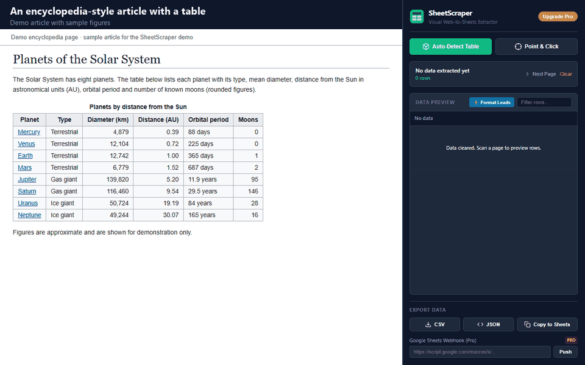

Copying a Wikipedia table and pasting it into Excel often gives broken columns, stray footnote numbers and merged cells. Here is what works, free first, and where each method falls short.
Add to Chrome — freeExcel can read a Wikipedia table without any add-in. On the desktop versions of Microsoft 365 and recent Excel releases:
https://en.wikipedia.org/wiki/List_of_countries_by_population_(United_Nations), and click OK.This is a good method. It is free, it stays linked to the page, and Data > Refresh All pulls the latest version. Be aware of the limits:

| Excel From Web | SheetScraper | |
|---|---|---|
| Cost | Included with desktop Excel | Free up to 50 rows per scan; Pro removes the limit |
| Choosing a table | Browse Table 0, 1, 2 in a Navigator list | Auto-Detect shows each table with a preview in the side panel |
| Stays linked to the page | Yes, with Refresh All | No, it is a one-time export (Watch this page is coming in v1.2, in review) |
| Pages you are signed in to | Needs the address; sees the raw page | Reads the table in your open tab |
| Output | Straight into the workbook | Excel (.xlsx), CSV, JSON or Copy to Sheets |
If you need a live, refreshing link to one known table, use Excel's From Web. If you want to see the table first, grab one of many in a few seconds, or pull a table from a site that Excel's importer cannot read, use SheetScraper. Wikipedia text is shared under the CC BY-SA licence, so credit Wikipedia and link to the article if you publish the data.
Sometimes. Select the table from its first cell to its last and paste. It often works on simple tables, but footnote numbers, merged header cells and hidden sort icons can break the columns, which is why the methods above exist.
A Wikipedia article usually contains many tables, including layout and navigation boxes. Excel lists them as Table 0, Table 1 and so on. Click each name to preview it until you find the one you want.
The free plan covers every export up to 50 rows per scan. Pro removes the row limit and adds webhook push: $30 once for lifetime, or $9 per month, taxes included.
Yes. SheetScraper reads the table on the page you have open, so it works on any Wikipedia language edition and on other websites.
I built SheetScraper because copying tables by hand wastes an afternoon. Install it, open a Wikipedia article, click Auto-Detect.
Add to Chrome — free